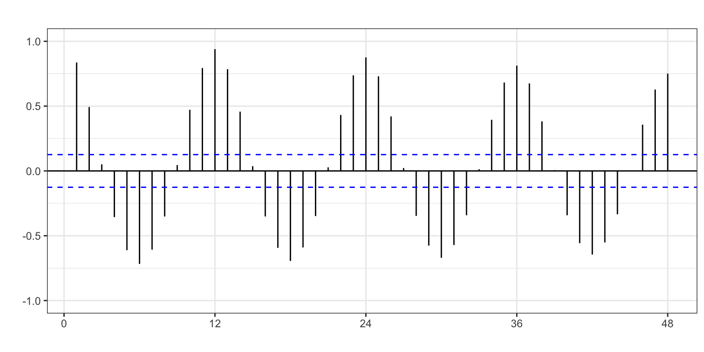
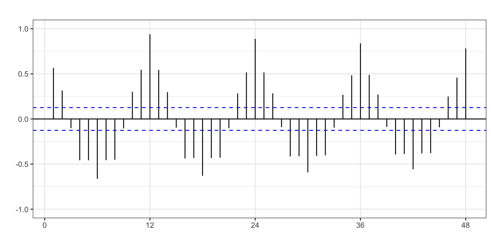
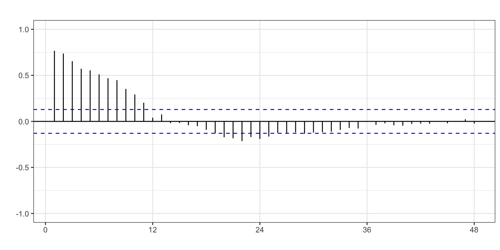
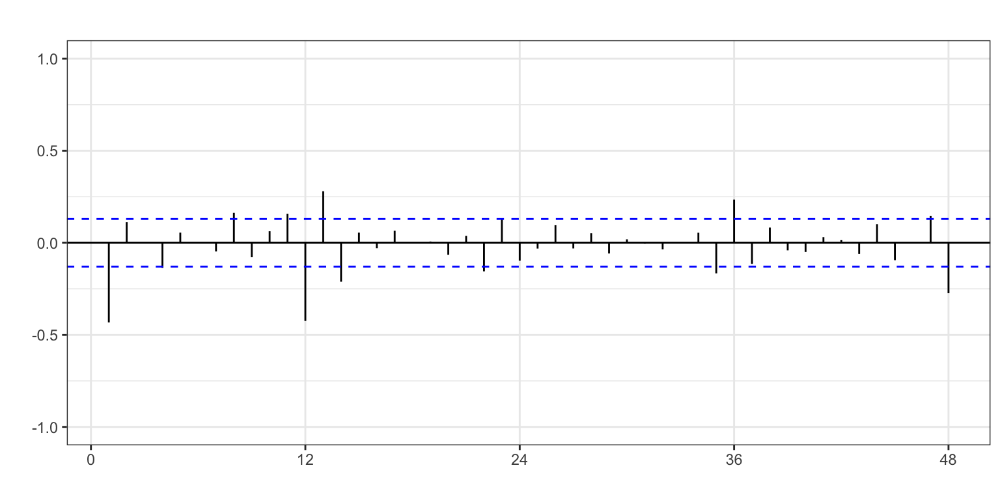
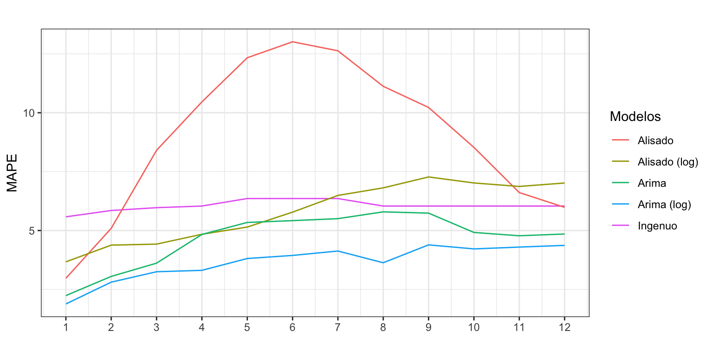

Pernoctaciones en alojamientos turísticos de turistas extranjeros
Procesos ARIMA con estacionalidad
Author
Iván Arribas (Depto. Análisis Económico. Universitat de València)
1 Introducción
Consideremos de nuevo la serie temporal correspondiente al número de pernoctaciones que los turistas extranjeros realizan en España en alojamientos turísticos autorizados (que llamaremos Pernoctaciones en adelante). Esta serie está disponible en Eurostat desde enero de 2000 hasta diciembre de 2023, un total de 24 años y 288 observaciones. La unidad original es número de pernoctaciones, así que dividiremos la serie por un millón para trabajar con millones de pernoctaciones.
La gráfica de la serie temporal (Figura 1) muestra en la primera década del presente siglo una tendencia suavemente decreciente en el número de pernoctaciones que, con el cambio de década, pasa a ser creciente. A finales de la década pasada se observa una caída en el número de pernoctaciones y en los últimos años el efecto de la Covid-19 y posterior recuperación. El esquema es multiplicativo.
La Figura 1 evidencia el fuerte impacto de la pandemia sobre el turismo en general y sobre las pernoctaciones de turistas internacionales en particular. Tanto la tendencia de la serie como su patrón estacional volaron por los aires a partir de marzo de 2020 con las medidas de confinamiento establecidas en España y en la mayoría de países del mundo. Este tipo de series recibe el nombre de series interrumpidas, haciendo referencia a que su estructura (tendencia y componente estacional) se han visto abrúptamente interrumpida durante un periodo prolongado de tiempo.
Existen múltiples estrategias para analizar las series interrumpidas.1 Una posible estrategia es ajustar la serie por un proceso Arima donde se modeliza el periodo que abarca la perturbación mediante intervención. Sin embargo, el efecto de la pandemia sobre la serie de pernoctaciones es tan complejo que su modelización a través de variables artificiales resulta muy compicado. Como evidencia de esta complejidad, si ajustamos la serie con la función seas, que también identifica intervención, nos encontramos con 14 intervenciones durante el periodo de la pandemia (años 2020 y 2021), en concreto 6 pulsos y 8 cambios de nivel.
Una estrategia alternativa consiste en fijar como valores perdidos todas las observaciones del periodo de la perturbación. Después se ajusta la nueva serie, que incluye los valores perdidos, por un modelo Arima. Finalmente, el modelo ajustado se utiliza para realizar las predicciones. En este ejemplo vamos a seguir esta estrategia.
Asumiremos que el efecto de la pandemia afectó el turismo internacional durante dos años, desde marzo de 2020 a febrero de 2021. Por tanto, vamos a crear una nueva serie idéntica a la original, excepto que para este periodo las observaciones se fijaran como valores perdidos o NA en R. Véase Figura 2.
# Identificamos el periodo de dos años de la perturbaciónfechas <-format(seq(as.Date("2000-01-01"), as.Date("2023-12-31"), by ="month"), "%Y-%m")covid <-format(seq(as.Date("2020-03-01"), as.Date("2022-02-28"), by ="month"), "%Y-%m")covid_filtro <- fechas %in% covid# Creamos una nueva serie...Pernoctacionesp <- Pernoctaciones#...y durante la perturbacion asignamos NAPernoctacionesp[covid_filtro] <-NA
Figura 2: Pernoctaciones asignando NA durante la Covid-19
El análisis siguiente se va a realizar sobre la serie Pernoctaciones con valores perdidos (Pernoctacionesp).
2.2 Diferenciación y logaritmo
El esquema multiplicativo de la serie aconseja el uso de la transformación logarítmica. Además, vamos a ver que para que la serie sea estacionaria es necesario diferenciarla tanto regular como estacionalmente, así que el uso de logaritmo vuelve a ser aconsejable si queremos ganar en interpretabilidad.
La Figura 3 muestra la FAC para la serie Pernoctaciones (log). En los paneles (a) y (b) las autocorrelaciones estacionales decrecen muy lentamente, indicando que la serie analizada no es ergódica. El panel (c) muestra que las autocorrelaciones en la parte regular decrecen lentamente, indicando que la serie analizada no es estacionaria. Solo la doble diferenciación regular y estacional de la serie muestra un rápido descenso en los coeficiente de autocorrelación (panel d), indicando que la serie así transformada es estacionaria en media y ergódica.
ggAcf(log(Pernoctacionesp), lag =48, ylim =c(-1, 1),xlab ="", ylab ="", main ="")ggAcf(diff(log(Pernoctacionesp)), lag =48, ylim =c(-1, 1),xlab ="", ylab ="", main ="")ggAcf(diff(log(Pernoctacionesp), lag =12), lag =48, ylim =c(-1, 1),xlab ="", ylab ="", main ="")ggAcf(diff(diff(log(Pernoctacionesp), lag=12)), lag =48, ylim =c(-1, 1),xlab ="", ylab ="", main ="")

(a) Log serie

(b) Dif. regular log serie

(c) Dif. estacional log serie

(d) Dif. regular y estacional log serie
Figura 3: FAC para Pernoctaciones
Por otro lado, la identificación automática de la diferenciación también concluye que es necesaria la doble diferenciación.
ndiffs(log(Pernoctacionesp))
[1] 1
nsdiffs(log(Pernoctacionesp))
[1] 1
Vamos a asumir que el proceso debe ser doblemente diferenciado \(\log(Pernoctaciones) \sim I(1)I_{12}(1)\).
2.3 Identificación del orden regular y estacional
Vamos a identificar los valores de \(p\), \(q\), \(P\) y \(Q\). Para ello solicitaremos con auto.arima y seas una identificación automática.
Con auto.arima incluiremos dos efectos calendarios, uno para el número de días del mes y otro para el efecto Semana Santa.
DiasMes <-monthdays(Pernoctacionesp)SemanaSanta <-easter(Pernoctacionesp)auto.arima(Pernoctacionesp, d =1, D =1,lambda =0,xreg =cbind(DiasMes, SemanaSanta))
La función auto.arima identifica un proceso \(ARIMA_{12}(1,1,0)(2,1,1)\), donde claramente los dos coeficientes del proceso autoregresivo estacional no son significativos. Las variables de intervención consideradas si que parecen ser significativas.
La identificación alcanzada por seas es un proceso \(ARIMA_{12}(0,1,1)(0,1,1)\) (modelo de las aerolíneas) forzando la transformación logarítmica, con intervención en Semana Santa y efecto días laborables. Además, identifica un pulso en mayo de 2011, asociado a la erupción de un volcán en Islandia que obligó a cerrar temporalmente el espacio aéreo en varios países de Europa, y un cambio de nivel en marzo de 2005 sin justificación aparente.
Las 24 variables de intervención encabezadas por MV (de missing values) son variables ficticias creadas para ajustar el periodo de la pandemia y se obtienen gracias al argumento na.action = na.x13 incluido en la función seas. El valor de estas variables puede interpretarse como las pernoctaciones (en millones) si no hubiera habido pandemia.
Vemos que ambas identificaciones difieren en su parte regular. Así, vamos a partir de la identificación obtenida por seas, el clásico modelo de las aerolíneas: \[log(Pernoctaciones) \sim ARIMA_{12}(0,1,1)(0,1,1).\]
Respecto de la intervención, incluiremos días del mes y Semana Santa y las dos intervenciones localizadas por seas antes de la pandemia. Sin embargo, consideraremos ambas intervenciones como pulsos. Por un lado, nada justifica el cambio de nivel sugerido por seas a partir de marzo de 2005. Por otro lado, la estimación de un modelo solo con los dos efectos calendario genera dos errores muy pronunciados (mayores de 3 desviaciones típicas) en marzo de 2005 y mayo de 2011.
3 Estimación
Antes se estimar el modelo identificado, vamos mejorar la implementación del efecto de la Semana Santa. Para ello, vamos a crear una variable que permita estimar el efecto del periodo de dos semanas que comprende Semana Santa y Pascua. Es decir, el periodo que va desde el lunes previo a Semana Santa hasta el Viernes posterior a Domingo de Resurrección. Esta nueva variable (SemanaSanta) valdrá cero para los meses distintos de marzo y abril; para marzo valdrá la proporción de días vacacionales que recaen en marzo; y para abril la proporción de días vacacionales que caen el abril.
La librería timeData proporciona una serie de funciones que permiten definir un calendario de festividades, identificar los fines de semana, etc. En concreto la función isBizday permite saber si un día es festivo (a partir de un calendario de festivos) e identificar los días laborables; y la función Easter permite identificar donde ha caído la Semana Santa.
El proceso seguido es el siguiente:
Con Easter se define la festividad de cada día del periodo considerado.
Por claridad, cada festivo se ha definido de forma independiente para después crear una variable con todos los festivos de Semana Santa (SemanaSanta).
El rango para todos los cálculos va desde 2000 hasta 2027 que incluye el rango de la serie Pernoctaciones más cuatro años de predicción.
A continuación, con timeSequence se crea una serie diaria desde el 1 de enero de 2000 hasta el 31 de diciembre de 2027.
Las dos siguientes líneas de código eliminan de la serie diaria los festivos de Semana Santa, para después dar a esta nueva serie abreviada el formato año-mes eliminando el día. De esta forma, la serie abreviada tendrá el mismo identificador para todos los días del mismo mes.
El argumento wday = 0:6 de la función isBizday indica que se deben preservar todos los días de la semana. Cuando se usa este argumento hay que tener en cuenta que el domingo es el día 0 y el sábado el día 6. Así wday = 1:5 dejaría todos laborables de la semana y wday = c(0, 6) solo los fines de semana.
Después, se crea una tabla que, por la naturaleza de la serie abreviada, tendrá para cada año-mes el numero de días del mes, excepto para marzo y abril que tendrán el número de días del mes que no caen en Semana Santa.
Fechamos la tabla, que es nuestra serie de días del mes sin Semana Santa.
Mostramos los resultados de este proceso para ayudar a entenderlo. Observa que para todos los meses de año excepto marzo y abril, lo que tenemos es simplemente el número de días del mes. Para marzo y abril tenemos el número de días del mes excepto los festivos de Semana Santa. Por ejemplo, en 2002 la Semana Santa cayó entre marzo y abril, de forma que los días no festivos en marzo fueron 24 y en abril 25.
Las siguientes líneas calculan que proporción de días de Semana Santa caen en cada mes y generan el efecto SemanaSanta: para marzo valdrá la proporción de días vacacionales que recaen en marzo y lo mismo para abril. Por ejemplo, en 2002 siete días de la Semana Santa cayeron en marzo y cinco en abril, es decir, 0.58 días en marzo y 0.42 en abril.
Las dos últimas líneas de código parten la serie en el periodo muestral y el de predicción.
Para un nivel de significatividad del 5% todos los coeficientes del modelo son significativos.
4 Validación
Analizando los criterios de bondad de ajuste se tiene que: el error porcental medio (MPE), igual a 0.08%, es prácticamente cero, por lo que no parece que haya sesgo en las predicciones; en media nos equivocamos en 640 mil pernoctaciones (RMSE); y el error porcentual medio es 2.2%, muy bajo. Los intervalos de confianza de las predicciones están correctamente calculadas.
accuracy(Arima1)
ME RMSE MAE MPE MAPE MASE ACF1
Training set 0.017 0.64 0.461 0.078 2.194 0.48 0.038
5 Ecuación del modelo identificado
Ahora que ya hemos dado por válido el modelo, veamos cuál es su ecuación.
El modelo teórico es \[(1-L)(1-L^{12})log(Pernoctaciones_t) =(1+\theta_1 L)(1 + \theta_{12}L^{12})\varepsilon_t +\]\[\gamma_1 DiasMes + \gamma_2 SemanaSanta + \gamma_3 d0305 + \gamma_4 d0511.\]
Si se desarrolla el modelo y se deja en función de la tasa de variación anual del número de pernoctaciones, queda (la parte de intervención no cambia):
La tasa de variación anual de las pernoctaciones de un año es la misma que la del año pasado. Es decir, las pernoctaciones evolucionan a tasa constante.
Si en periodos previos se ha producido un shock, hay que tenerlo en cuenta en las predicciones.
Cada día del mes adicional las pernoctaciones aumentan un 2.8%. De otra forma, cada día del mes la tasa de variación anual de las pernoctaciones aumenta 2.8 puntos porcentuales.
En el mes en que cae la Semana Santa las pernoctaciones aumentan un 5.8% (la tasa variación anual de las pernoctaciones aumenta 5.8 puntos porcentuales).
En marzo de 2005 las pernoctaciones fueron significativamente menores de la esperado (5.7%).
En mayo de 2011 el cierre del espacio aéreo motivado por la erupción de un volcán en Islandia redujo las pernoctaciones un 6.6%.
6 Predicción de las pernoctaciones
Una vez dado por válido el modelo, podemos pasar a realizar predicciones para los próximos años. Para el efecto calendario días del mes generaremos para el periodo de previsión su correspondiente variable de intervención; para Semana Santa usaremos en las predicciones la variable antes generada; y para la intervención no sujeta a calendario fijaremos sus valores previstos a cero.
Figura 5: Pernoctaciones (2000-2023) y predicción (2024-2027)
La Figura 5 muestra la previsión junto con el intervalo de confianza al 95%. La amplitud del intervalo para las previsiones a los 4 años (horizonte temporal de 37 a 48 meses) refleja el incremento de la incertidumbre en las previsiones a muy largo plazo.
7 Comparación con otros modelos
7.1 Calidad de ajuste
La serie Pernoctaciones la hemos ajustado por el método ingenuo con estacionalidad, el método de Alisado Exponencial y procesos ARIMA. La Tabla 1 recoge el error medio (RMSE) y porcentual (MAPE) al usar estas tres aproximaciones con la serie original y su transformación logarítmica.
Tabla 1: Criterios de calidad para previsiones intramuestrales a un periodo vista. Varios modelos
Serie
Método
RMSE (miles)
MAPE (%)
Pernoctaciones
Ingenuo
1347
4.90
Pernoctaciones
Alisado
785
3.42
log(Pernoctaciones)
Alisado
733
2.63
Pernoctaciones
ARIMA
633
2.51
log(Pernoctaciones)
ARIMA
640
2.19
Podemos extraer varias conclusiones: i) la transformación logarítmica no mejora necesariamente el ajuste de los datos; ii) el proceso Arima con transformación logarítmica es el modelo con mejor ajuste; y iii) el método de Alisado con transformación logarítmica muestra una calidad de ajuste comparable a la de los modelos Arima. La mejora en el ajuste de los modelos Arima respecto del método de Alisado se debe a la incorporación de variables ficticias para recoger la intervención y los efectos calendario.
7.2 Predicciones extramuestrales
Vamos a determinar si también la aplicación de modelos Arima mejora la calidad de las predicciones extra-muestrales lo suficiente como para justificar su uso –frente a los métodos de alisado, mucho más sencillos. Para ello, aplicaremos la metodología de origen de predicción móvil para estimar la capacidad predictiva del modelo Arima y compararla con el modelo de Alisado y el ingenuo con estacionalidad.
k <-120h <-12T <-length(Pernoctacionesp) s <- T - k - h mapeIngenuo <-matrix(NA, s +1, h)mapeAlisado <-matrix(NA, s +1, h)mapeAlisadoLog <-matrix(NA, s +1, h)mapeArima <-matrix(NA, s +1, h)mapeArimaLog <-matrix(NA, s +1, h)X <-data.frame(cbind(DiasMes, SemanaSanta))for (i in0:s) { train.set <-subset(Pernoctaciones, start = i +1, end = i + k) test.set <-subset(Pernoctaciones, start = i + k +1, end = i + k + h) train.setp <-subset(Pernoctacionesp, start = i +1, end = i + k) test.setp <-subset(Pernoctacionesp, start = i + k +1, end = i + k + h) X.train <-as.matrix(X[(i +1):(i + k),]) X.test <-as.matrix(X[(i + k +1):(i + k + h),])#Ingenuo fit <-snaive(train.set, h = h) mapeIngenuo[i +1,] <-100*abs(test.set - fit$mean)/test.set#Alisado sin log fit <-ets(train.set, model ="AAA", damped =TRUE) fcast <-forecast(fit, h = h) mapeAlisado[i +1,] <-100*abs(test.set - fcast$mean)/test.set#Alisado con log fit <-ets(train.set, model ="AAA", damped =TRUE, lambda =0) fcast <-forecast(fit, h = h) mapeAlisadoLog[i +1,] <-100*abs(test.set - fcast$mean)/test.set#ARIMA sin log fit <-try(Arima(train.setp, order =c(0, 1, 1),seasonal =c(0, 1, 1),xreg = X.train), silent =TRUE)if (!is.element("try-error", class(fit))) { fcast <-forecast(fit, h = h, xreg = X.test) mapeArima[i +1,] <-100*abs(test.setp - fcast$mean)/test.setp }#ARIMA con log fit <-try(Arima(train.setp, order =c(0, 1, 1),seasonal =c(0, 1, 1),lambda =0,xreg = X.train),silent =TRUE)if (!is.element("try-error", class(fit))) { fcast <-forecast(fit, h = h, xreg = X.test) mapeArimaLog[i +1,] <-100*abs(test.setp - fcast$mean)/test.setp }}mapeIngenuo <-apply(mapeIngenuo, MARGIN =2, FUN = median)mapeAlisado <-apply(mapeAlisado, MARGIN =2, FUN = median)mapeAlisadoLog <-apply(mapeAlisadoLog, MARGIN =2, FUN = median)mapeArima <-apply(mapeArima, MARGIN =2, FUN = median, na.rm =TRUE, )mapeArimaLog <-apply(mapeArimaLog, MARGIN =2, FUN = median, na.rm =TRUE)
ggplot() +geom_line(aes(x =1:12, y = mapeIngenuo, colour ="Ingenuo")) +geom_line(aes(x =1:12, y = mapeAlisado, colour ="Alisado")) +geom_line(aes(x =1:12, y = mapeAlisadoLog, colour ="Alisado (log)")) +geom_line(aes(x =1:12, y = mapeArima, colour ="Arima")) +geom_line(aes(x =1:12, y = mapeArimaLog, colour ="Arima (log)")) +ggtitle("") +xlab("") +ylab("MAPE") +scale_x_continuous(breaks=1:12) +scale_color_discrete(name ="Modelos")

Figura 6: Errores de previsión extra-muestral. Varios modelos
La Figura 6 revela que Arima, con o sin transformación logarítmica, es superior a Alisado en calidad de predicciones.
También se observa que la transformación logarítmica mejora notablemenre la calidad de las predicciones en los modelos de Alisado y Arima
El error con el método Ingenuo parece independiente del horizonte temporal.
8 Efecto de la pandemia de la Covid-19 sobre las pernoctaciones
Vamos a usar el modelo Arima identificado para estimar la serie recortada hasta diciembre de 2019 y predecir los años 2020 a 2023. Estas previsiones se pueden interpretar como el número de pernoctaciones que hubiera habido en un mundo sin pandemia. Luego, vamos a comparar las predicciones con la realidad para evaluar el efecto de la pandemia sobre las pernoctaciones. Esta ideas quedan recogidas en el siguiente código.
Pernoctacionesb <-window(Pernoctaciones, end =c(2019, 12))SemanaSantab <-window(SemanaSanta, end =c(2019, 12))DiasMesb <-monthdays(Pernoctacionesb)d0305b <-1* (trunc(time(Pernoctacionesb)) ==2005&cycle(Pernoctacionesb) ==3)d0511b <-1* (trunc(time(Pernoctacionesb)) ==2011&cycle(Pernoctacionesb) ==5)Arimab <-Arima(Pernoctacionesb, order =c(0, 1, 1), seasonal =c(0, 1, 1),lambda =0,xreg =cbind(DiasMesb, SemanaSantab, d0305b, d0511b))tmp <-ts(rep(0, 48), start =2020, frequency =12)pDiasMesb <-monthdays(tmp)pSemanaSantab <-window(SemanaSanta, start =c(2020, 1), end =c(2023, 12))pArimab <-forecast(Arimab, h =48,xreg =cbind(pDiasMesb, pSemanaSantab, rep(0, 48), rep(0, 48)))autoplot(Pernoctaciones, series ="Pernoctaciones reales",xlab ="",ylab ="",main ="") +xlim(2019, 2024) +autolayer(pArimab,PI =FALSE,series="Pernoctaciones estimadas")
Figura 7: Pernoctaciones reales durante los años 2020 a 2023 y estimación si no hubiera habido pandemia
La Figura 7 muestra que en los años 2020 y 2021 el número de pernoctaciones reales fue muy inferior al que hubiera tenido lugar sin la pandemia. Durante el año 2022 el turismo internacional se recupera y ya en 2023 el número real de pernoctaciones es prácticamente igual al valor predicho si la Covid-19 no hubiera existido.
aggregate(Pernoctaciones - pArimab$mean, FUN = sum)
Time Series:
Start = 2020
End = 2023
Frequency = 1
[1] -246.31301 -197.09062 -44.82820 -19.19349
En 2020 la caída estimada de las pernoctaciones fue de 246 millones y en 2021 de 197 millones. El efecto de la pandemia habría desaparecido en el año 2023.
Footnotes
Véase la píldora Series interrumpidas para profundizar más en las estrategias que se pueden seguir para analizar y predecir series que han sufrido una larga perturbación en su estructura.↩︎